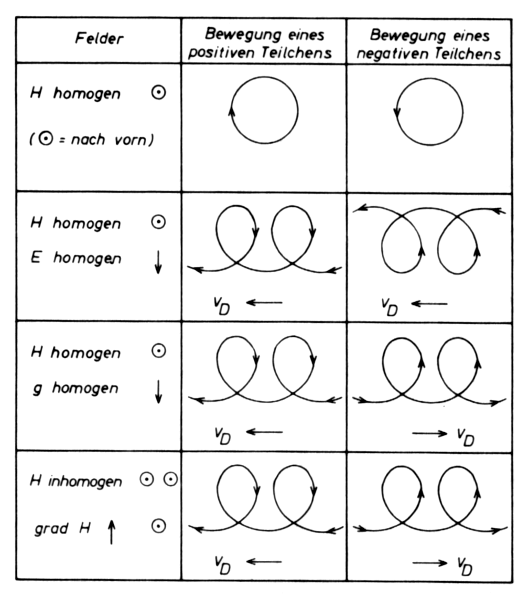

8 Newtonsche Bewegungsgleichung
Die Bewegung geladener Teilchen in einem stark verdünnten Plasma lässt sich bei Vernachlässigung von Stößen durch eine Einzelteilchentheorie gut annähern.
Die Änderung des Bewegungszustandes eines Teilchen wird durch die Newtonsche Bewegungsgleichung formuliert. Die Newtonsche Mechanik beschreibt die klassische Teilchenbewegung als eine Bahn durch den Euklidischen Raum und die Zeit \(t\). Zum Zeitpunkt \(t\) befindet sich das Teilchen am Ort \(\mathbf r(t)\). Die Funktion \(\mathbf r(t)\) beschreibt die Bahn des Teilchens im Raum. Die Teilchengeschwindigkeit \(\mathbf v(t)\) ist die Zeitableitung der Position. Der Impuls \(\mathbf p(t)\) ist das Produkt aus Masse \(m\) und Geschwindigkeit \(\mathbf v(t)\). Die Zeitableitung der Geschwindigkeit ist die Beschleunigung \(\mathbf a(t)\).
Newtons zweites Grundgesetz der Mechanik lex secunda besagt folgendes:
Die Änderung der Bewegung ist der Einwirkung der bewegenden Kraft proportional und geschieht nach der Richtung derjenigen geraden Linie, nach welcher jene Kraft wirkt.
Die Änderung des Bewegungszustandes kann nur unter Wirkung von Kräften erfolgen. Werden diese Kräfte z.B. durch ein magnetisches Feld \(\mathbf B\), ein elektrisches Feld \(\mathbf E\) sowie ein weiteres Kraftfeld \(\mathbf F\) erzeugt, dann nimmt die Newtonsche Bewegungsgleichung folgende Form an:
\[ m \ddot{\mathbf r} = q (\mathbf E + \mathbf v \times \mathbf B) + \mathbf F \tag{8.1}\] Diese Gleichung kann für einfache Feldkonfigurationen trivial integriert werden. Im Falle des geomagnetischen Feldes gibt es keine geschlossenen Lösungen, sondern nur Näherungen. Für Teilchen mit geringer Energie, wie sie bspw. in der Ionosphäre oder im Van-Allen-Gürtel vorliegen, steht eine Theorie zur Approximation bereit.
Zunächst werden wir Lösungen von Gleichung 8.1 für vereinfachte Bedingungen betrachten. Später werden wir sehen, dass im Allgemeinen von den Teilchen eine schnelle Kreisbewegung ausgeführt wird, die überlagert wird durch die Bewegung durch Magnetfelder und elektrische Felder.
8.1 Zyklotronfrequenz und Gyrationsradius
Bei Anwesenheit eines Magnetfeldes bewegen sich geladene Teilchen in Schraubenlinien entlang der Feldlinien. Die Bewegungsgleichung für ein mit der Geschwindigkeit \(\mathbf v\) bewegtes Teilchen der Masse \(m\) und Ladung \(q\) im Magnetfeld \(\mathbf B\) lautet \[ m \frac{d \mathbf v}{d t} = q \mathbf v \times \mathbf B \]
Wir betrachten zunächst den Fall eines homogenen Magnetfeldes und setzen \[ \mathbf B = const, \quad \mathbf E = 0, \quad \mathbf F = 0 \] Die Geschwindigkeit \(\mathbf v\) zerlegen wir vektoriell in eine Komponente parallel und eine Komponente senkrecht zum magnetischen Feld. \[ \mathbf v = \mathbf v_\| + \mathbf v_\perp \] Gilt \(\mathbf v_\| = const\), dann ist \(m \dot{\mathbf v}_\| = 0\) und \[ m \dot{\mathbf v}_\perp = q \mathbf v_\perp \times \mathbf B. \]
8.2 Energieerhaltung
An dieser Stelle klären wir, ob die kinetische Energie des Teilchens eine Erhaltungsgröße ist. Da \(\mathbf v_\| = const\), betrachten wir die Änderung der kinetischen Energie \[ \frac{d E_{kin}}{d t} = \frac{d}{dt} \left( \frac{1}{2} m |\mathbf v_\perp|^2 \right) = \mathbf v_\perp \cdot (m \dot{\mathbf v}_\perp) = q \mathbf v_\perp \cdot \left( \mathbf v_\perp \times \mathbf B \right) \overset{!}{=} 0. \] Damit ist gezeigt, dass die kinetische Energie eines Teilchens im Magnetfeld eine Erhaltungsgröße ist. Ein statisches Magnetfeld ändert also weder \(\mathbf v\) noch die kinetische Energie. Dies ist eine sehr wichtige Erkenntnis mit weitreichenden Konsequenzen für den Fall, dass das Magnetfeld zeitlich variabel oder inhomogen ist.
8.3 Flugbahn
Bewegt sich das Teilchen in einer Ebene senkrecht zu \(\mathbf B\), dann gilt \[ \mathbf v _\| \times \mathbf B = \mathbf 0 \] und \[ \mathbf v_\perp \times \mathbf B \perp \mathbf B. \] Es gilt wegen \(\mathbf v = \mathbf \omega \times \mathbf r\) (Bahngeschwindigkeit gleich Kreuzprodukt aus Winkelgeschwindigkeit und Ortsvektor) \[ \dot{\mathbf v}_\perp = \frac{q}{m} \left( \mathbf v_\perp \times \mathbf B \right) = \boldsymbol \omega_g \times \mathbf v_\perp \tag{8.2}\] Die Größe \(\mathbf \omega_g\) ist die vektorielle Winkelgeschwindigkeit der Kreisbewegung. Es folgt \[ \boldsymbol \omega_g = - \frac{q}{m} \mathbf B = \frac{|q|}{m} B \, \widehat{\boldsymbol \omega}_g = \omega_g \widehat{\boldsymbol \omega}_g \] Der Betrag der Winkelgeschwindigkeit wird als Zyklotronfrequenz (oder Larmorfrequenz) bezeichnet. \(\widehat{\mathbf \omega}_g\) ist der Einheitsvektor der Winkelgeschwindigkeit. Mit der Rechte-Hand-Regel ergibt sich die Bewegungsrichtung. Die Richtung der Kreisbewegung hängt vom Vorzeichen der Ladung des Teilchen ab. Es gilt \[ q < 0: \qquad \widehat{\boldsymbol \omega}_g \| \mathbf B \qquad \text{parallel} \] \[ q > 0: \qquad -\widehat{\boldsymbol \omega}_g \| \mathbf B \qquad \text{antiparallel} \] Integrieren wir Gleichung 8.2 zeitlich, erkennen wir den Zusammenhang zwischen Bahngeschwindigkeit und Teilchenposition. Es gilt \[ \mathbf v_\perp = \boldsymbol \omega_g \times \mathbf r_g \] Mit \(\mathbf r_g\) bezeichnen wir die Teilchenposition. Sie beschreibt eine Kreisbahn mit Radius \(r_g\) um den Gyrationsmittelpunkt, der auch als Führungszentrum bezeichnet wird.
8.3.1 Beispiel
Wir berechnen die Zyklotronfrequenz und den Gyratonsradius für ein Elektron. Die Elektronenmasse ist \[ m_e = 9.109 \times 10^{-31} ~\text{kg}, \] seine Ladung entspricht der Elementarladung \[ |q| = e = 1.602 \times 10^{-19} ~ \text{C}. \] Wird \(\mathbf B\) in Tesla angegeben, gilt für die Zyklotronfrequenz des Elektrons die Gleichung \[ \omega_c^e = \frac{e B}{m_e} = 1.76 \times 10^{11} \, B \text{ in rad}\cdot s^{-1} \] Da Protonen eine um den Faktor 1890 größere Masse als Elektronen besitzen, ist ihre Zyklotronfrequenz niedriger: \[ \omega_c^p = \frac{e B}{m_p} = 9.58 \times 10^{7} \, B \text{ in rad}\cdot s^{-1} \] Der Gyrationsradius ist \[ r_g = \frac{v_\perp}{\omega_g} = \frac{m v_\perp}{|q| B}. \]
8.4 Zusammenfassung
